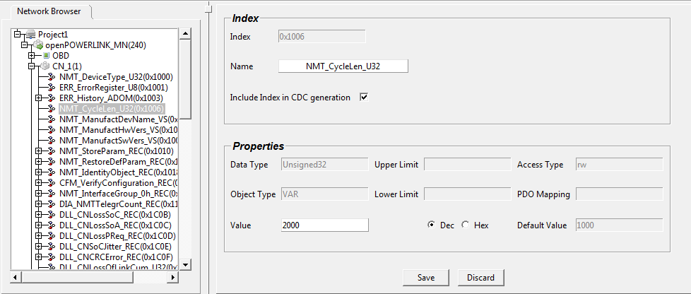
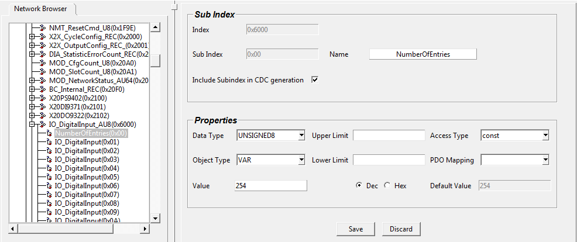
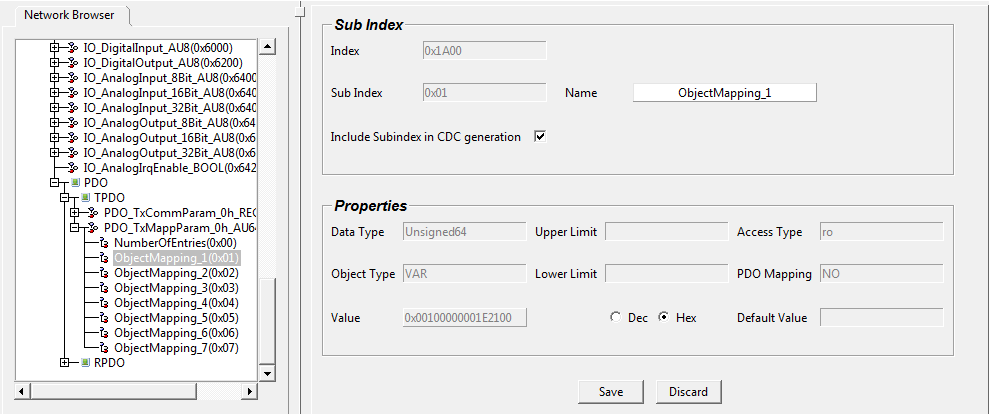
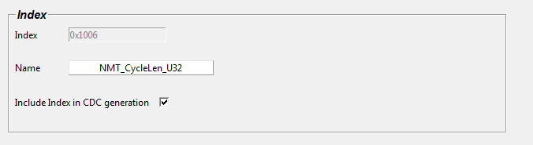

The Objects/Sub-Objects with access type value ro/const/empty from XDCs cannot be modified.
The data type of an Object can be changed if the object type is VAR or ARRAY.
Communication Profile Area Objects
The user can edit only NAME and Value of these objects as shown in Figure.

Manufacture Specific Objects
The user can edit ALL the properties of these objects as shown below.

PDO Screens
PDO objects will be presented in a tabular structure. This table is visible by clicking ‘+’ sign of PDO Node or double-clicking the PDO node, and then select RDPO or TPDO as shown in Figure.
In the tabular structure – The user can change the Maping entry in the table, the same change will be reflected if user selects that particular object.
Feature of PDO table
Table will be filled with the data only if PDO have ACTUAL VALUES, default values will not be visible in the table.
The user can edit the following columns of the table, provided the access type is not ‘ro’
Offset
Length
Index
SubIndex
If the user makes any change in the above mentioned column, the same change will be automatically reflected in the mapping entry.
The user can select that particular object in the tree and edit it as shown in Figure.

The user has the option of selecting which objects should go in CDC and which should not. This can be achieved by selecting that particular object and in the right side window, check the 'Include Index in CDC generation' check-box as shown in the below screen.

If the check-box is checked, then that object will be included in the CDC generation.
If the check-box is NOT checked, then that object will not be included in the CDC generation.
Note: The user has to make sure that all the necessary objects and sub-objects are checked for inclusion in the CDC generation. Even if the check-box is checked, the object will not be included if the object doesn't have the actual value. This is applicable for all objects of both MN and CN.